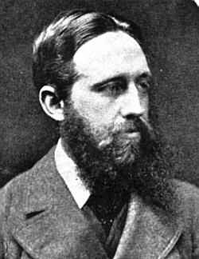
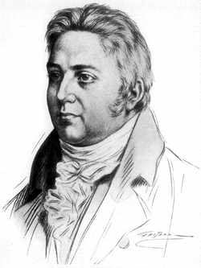

The piece has a strange fantastical quality [...] Nothing much happens, but this is a remarkable journey and one that builds to crescendo. L'oeuvre a une étrange tonalité fantastique [...] Il ne se passe pas grand chose, mais c'est un voyage remarquable, un qui mène à un crescendo. theguardian.com (Summer voyage: In Pursit of Spring by Edward Thomas)
Voici le récit d'un voyage de Londres à Quantock Hills [[Note du traducteur : les Quantock Hills. communément appellées Quantocks, sont une chaîne de collines situées dans le comté de Somerset, au sud-ouest de l'Angleterre, et considérées comme une des plus belles aires naturelles d'Angleterre. Le poéte anglais Samuel Taylor Coleridge y a vécu de 1797 à 1798, à Nether Stowey dans une maison qu'il louait. Il est considéré que c'est là qu'il a écrit ses oeuvres les plus significatives et qu'est né le mouvement romantique littéraire anglais qu'il a fondé avec son ami le poète anglais William Wordsworth, qui de 1797 à 1798 a vécu à Holford, un village à proximité de Nether Stowey. Ref : https://www.nationaltrust.org.uk/coleridge-cottagehttps://en.wikipedia.org/wiki/Quantock_Hills]] - à Nether Stowey, Kilve, Crowcombe et West Bagborough, jusqu'au point culminant où la route de Taunton-Bridgwater atteint les sommets et derrière on découvre tout Exmoor , en face tous les Mendips, sur la gauche la mer, et très au loin le Pays de Galles. Ce fut un voyage à ou avec une bicyclette. La période fut la semaine de Pâques, Pâques était en mars. "Un voyage de Pâques dans le nord probablement ?" Non. Et le nord-est n'avait pas grand chose à voir avec non plus avec sa préparation [[Ndt : le texte original dit "A North-Easter, probably?" No. Nor did much north-east
go to the making of it" ; northeaster est en fait un vent fort ou une tempête du nord-est]]. J'exposerai l'origine de ce voyage brièvement en remontant en arrière juste un mois - c'est à dire au jour où j'ai commencé à évaluer méthodiquement quel temps il ferait à Pâques.
Peut-être était-ce plus d'un mois avant Pâques qu'un faux printemps visita Londres. Mais je remonterai d'abord un peu plus loin encore dans le temps, à un de ces grands et notables jours après le changement d'année, qui émeut tellement le coeur mais sans l'altérer.
Le vent soufflait du nord-ouest avec tant de tranquillité et d'énergie à la fois, comme pour rappeller l'image d'un bon géant avançant à grandes enjambées et avec de superbes gestes, comme ceux d'un semeur.
Le vent soufflait et le soleil brillait sur Londres, une myriade de toits riaient ensemble sous la lumière. La fumée et les drapeaux, jaunes et bleus et blancs ondulaient tulmultueusement, luttant pour le plaisir d'échapper aux cheminées et aux mâts, comme des meutes apercevant leur proie. Les rangées de nuages baignant leurs flancs bas dans la brume marron de l'horizon avaient la majesté des grandes montagnes, de l'écume sur les crêtes de gerbes de cristal, et ils brulaient dans la lumière. Les nuages faisaient honneur à la ville, qu'ils entouraient comme des remparts célestes. Les tours et les flêches de pierre étaient comme tamisées et lumineuses comme de la vieille porcelaine. Il n'y avait aucune matière visible qui ne fut rendue précieuse par le fort vent et la superbe lumière. Tout était nouvellement édifié pour un grand projet. Les drapeaux s'agitaient au vent pour saluer l'ouverture festive des barrières de ces murs blancs à un peuple qui surgirait maintenant et avancerait pour s'emparer des lieux. Princière, telle devait être la vie qui avait cet amphithéâtre de nuages et de palaces pour scène.
Des choses humaines, seule la musique - pour autant qu'il s'agisse d'une chose humaine - convenait à ces joies et cette majesté. Et si, pensais-je, l'apparat des fleuves et des toits et des nuages comme des murailles montagneuses du monde était fait, comme si souvent autrefois, juste pour le plaisir des dieux invisibles ? Qui n'a pas connu un jour où une fête notable est manifestement célébrée avec une rare noblesse en hommage aux nuages, aux couleurs des forêts, à l'éclat des eaux pour que tout sur terre continue comme il a coutume d'être ?
Pour l'instant, la vie des hommes allant et venant depuis les ponts se poursuivait comme la vie que je connaissais, pourtant au-dessous, sur les eaux étincelantes de nombreux oiseaux étaient perchés, ou s'étaient déjà accomodés comme de merveilleuses fleurs sur les bastingages d'un chaland peint des couleurs d'un perroquet - rouge et vert. Quand aurait lieu l'invasion ?
Dans les rues la clameur inhumaine des masses continuait, au milieu de laquelle un enfant pleurant pour un jouet était une impertinence, une sorte d'interruption terrible de la violente pamoison en marche.
Entre la multitude et l'individu aucun point commun n'apparaissait. Le vent faisait venir les couleurs aux joues d'une fille. Là, l'une souriait d'un bonheur intérieur. Une autre, qui parlait sereinement, avait une belle bouche douce et de grands yeux qui regardaient seulement d'autres yeux, ceux de l'homme à côté d'elle qui penchait plus près sa tête. Le vent agitait les pans de fourrures marrons ou bleues le long des silhouettes de grandes femmes somptueuses, et versait comme du vin dans leurs corps de sorte que leur teint brillait sous leurs chapeaux violets. Mais en un instant la beauté fugitive d'une attitude, d'une silhouette ou d'un geste sombrait et était emportée dans la multitude océanique. Un garçon venait juste de retrouver son père à une station ferroviaire et était heureux ; il tenait la main de l'homme et trottait doucement, essayant de le faire courir - en vain : puis avec délice il mit son bras autour de la taille de son père et se laissa traîner ainsi à-demi soulevé du sol, pendant quelques mètres, riant et bavardant comme un oiseau sur une branche mouvante. Tous deux faisaient obstacle aux autres, qui s'écartaient à droite ou à gauche avec dédain ou impatience. Seule une enfant à l'entrée d'une ruelle les regardait et souriait, songeant comme dans une illusion qu'elle était sa soeur, et qu'il était leur père.
J'arrivai à des trottoirs plus larges. Ici il y avait moins de précipitation ; et les femmes entraient et sortaient de la foule, pas seulement le long de la rue, mais traversant aussi ici et là ; un homme pouvait aller à n'importe quelle allure, pas nécessairement celle de la foule. Quelques unes des plus belles femmes distinguées du monde se déplaçaient doucement et mélodieusement selon un singulier patron, que tout un chacun pouvait observer librement ; elles étaient environnées de bijoux brillants, de métal et de verre, de superbes vêtements et soiries, et beaucoup avaient un faire-valoir dans les figures mâles noires et blanches à côté d'elles. Elles se déplaçaient sans appréhension. Majestueuses, précieuses, délicates, belles, cependant bien que toute proche elles étaient vues comme dans un cristal magique qui enchâsse le passé et le mort d'antan. Elles marchaient comme en rêve, souriant avec insouciance. Elles promenaient leurs fiers ou aimables regards cà et là. A un moment, dans la lumière intense d'une boutique de joaillier scintillante de perles, de diamants et d'or, une grande main rouge, froide et pas vraiment propre, apparut à l'intérieur, tenant dans trois doigts craintifs et prudents une broche d'or et de diamants, qu'elle plaça au milieu des autres, puis s'effaça peu à peu, timidement, de crainte d'abîmer ces éblouissants braseros. Les yeux des femmes regardaient la broche ; la main rouge n'avait pas à être si craintive ; on ne s'en souciait pas - le bonhomme était comme invisible. Droit au milieu des femmes, au milieu du large trottoir, et très doucement, s'avançait un vieil homme. Il était petit, et son pardessus rapiécé retombait en parallélogramme de ses épaules presque sur le trottoir. D'en dessous sa petite casquette d'abondantes boucles grises sortaient et s'étalaient sur son col relevé. Juste sous la bordure de son manteau ses talons usés luisaient de rouge. Il avait les mains enfoncées dans les poches. Son visage était presque caché par les boucles et le col : tout ce qu'on voyait de lui était le rouge froid et lustré de ses joues, le nez droit et large et l'éclat d'yeux gris qui ne regardaient ni à gauche ou à droite, mais devant et un peu vers le bas. Il ne faisait pas un bruit, sauf le claquement du cuir pourri avec ses pieds qu'il soulevait à peine de peur que ses chaussures tombent en morceau. Le compositeur des harmonies de cette journée aurait pu certainement faire usage du veil homme - sans doute le fit-il ; mais comme c'était un jour de fête consacré aux dieux, pas aux hommes, je ne compris pas. Autour de cette figure, vêtue de toutes les nuances de la pauvreté, l'assemblée des femmes en violet et noir, en cannelle et vert, en mordoré et gris, écarlate et ardoise, et les marrons et marrons dorés des fourrures animales, serpentait fantastiquement. L'assemblée ne faisait pas attention à lui, ni lui à l'assemblée. Le soleil brillait de tout son éclat. Le vent soufflait et agitait vigoureusement la fumée et les drapeaux avec le ciel en arrière plan. Les chevaux cambraient leurs robustes encolures, montrant leurs dents, piétinant, se rassemblant peu à peu en file et en groupe, une frise aussi magnifique que la procession de nuages blancs dorés, ondulant le long de l'horizon.
Ce soir, sans penser au printemps, je commencai à regarder mes cartes. Le printemps viendrait, bien sur - rien, je supposais, ne pourrais l'empêcher - et je devais me préparer l'esprit à comment j'irais vers l'ouest. Quoi que je fasse, je devais traverser le plateau de Salisbury, pas par obligation mais par choix ; il était cependant difficile de décider d'aller, soit relativement en diagonale en accord avec mes objectifs vers l'ouest, ou de flâner par l'Avon, ici d'un côté, là de l'autre, par les routes parallèles longeant la rivière, jusqu'à Amesbury. Une fois arrivé à Amesbury, ce serait très tentant de suivre la rivière parmi ces villages de chaumières, jusqu'à Upavon, puis au village de Stephen Duck, Charlton [[Ndt : Stephen Duck (1705-1756) est un poète anglais qui naquit à Charlton]], et la Pewsey Valley, puis, tourner encore vers l'ouest, en vue du très insipide White Horse [[Ndt : géoglyphe relativement nombreux en Angleterre - 8 sont encore visibles sur les 24 connus - notamment dans le comté de Wiltshire : figure représentant un cheval blanc, taillée à flanc de colline en enlevant l'herbe et la terre suivant le dessin d'un cheval, puis en comblant cette espace avec de la craie, très abondante dans le sous-sol du comté de Wiltshire. Leur origine n'est pas connue, peut-être religieuse, rituelle, totèmique. Celui près du village de Pewsey auquel E. Thomas fait allusion datait du 18è siècle et faute d'entretien disparut dans les années 1930 ; en 1937 un autre fut taillé, toujours visible de nos jours. ( Voir les sites en anglais http://www.wiltshirewhitehorses.org.uk (excellent) et http://www.hillfigures.co.uk) et https://goo.gl/WaFZUq (Wikipedia) ]] au-dessus de Alton Priors, pour passer par Urchfont et Devizes.
Ou encore, je pourrais aller jusqu'à Wylye à l'ouest de Salisbury, et avoir toujours en dessous la rivière, ses hameaux et ses églises, le mur du Plain [[Ndt : Salisbury Plain, plateau crayeux entouré de vallées parcourues par des rivières - Avon, Wylye, Bourne - essentiellement situé dans le comté de Wiltshire, en Angleterre]] toujours au dessus, sur la droite. Ainsi j'arriverais à Warminster et au grand mur ouest du Plain [[Ndt : voir note précédente]], qui surplombe la ville.
Le chemin évident consistait à prendre nord-ouest au delà du Plain, de Stapleford, au dessus de la Winterbourne [[Ndt : il s'agit ici de River Hill, une rivière qui ne coule que 3 mois par an ; les rivières "intermitentes" sont nommées winterbourne en Angleterre]] à travers des pâturages à vaches et à moutons, par Shrewton et Tilshead, et descendre encore vers d'autres cours d'eau à West Lavington. Ou bien, à Shrewton je pourrais tourner carrément vers l'ouest, et ainsi visiter les villages isolés Chitterne et Imber.
Je ne pouvais pas me décider. Si j'allais à pied, je pourrais me diriger comme je voudrais sur le Plain. Il y a des chemins de campagne de partout jusqu'à partout. Mais, d'un autre point de vue, il pourrait être nécessaire à cette époque de l'année de marcher toute la journée, ce qui signifierait au moins trente miles par jour, ce qui était plus que ce que j'étais disposé à faire. Le faux printemps, le temps qui vraiment me berçait de l'illusion qu'il était honteux de ne pas lui faire confiance arriva un mois après, et une des ses plus belles journées s'épanouit sur Londres.
Beaucoup de jours à Londres n'ont pas de saison. Nous constatons seulement qu'il fait chaud ou froid, sec ou humide ; que nous sommes dedans ou dehors, que nous sommes à l'aise ou pas. Ce n'était pas une de ces journées. La pluie cinglait et le vent rugissait dans la nuit, enveloppant ma chambre dans une étreinte agitée comme si j'avais été un petit bateau sur une vaste mer, et non un trou de pigeon parmi les milliers d'un colombarium au coeur de Londres. L'aube me réveilla par sa tranquillité. L'air était d'une douceur morne ; il y avait de la clarté sous l'obscurité des nuages ; l'air était à peine remué par le reflux de la tempête ; et même quand le soleil fut levé on aurait dit encore l'aube. Le bruit de ferraille de la circulation était un mur autour du calme dans lequel j'étais enfoncé profondément. J'en entendais à peine le son ; mais je ne pouvais pas oublier le mur. Dans le cercle de tranquilité un perroquet chantait très clairement les chansons de rue d'il y a vingt ans, encore et encore, presque aussi méliodieusement qu'un merle. Je l'avais entendu souvent avant, mais maintenant il chantait différemment - Je ne sais pas ou ne réfléchis pas à comment ou pourquoi. La chanson était différente comme l'était l'air. Je ne pouvais pas encore sentir directement l'air, car les fenêtres étaient bien fermées contre la suie de quatre tuyaux de cheminées voisines.
Au-dehors, business et plaisir du jour me serrèrent de près, comme un prisonnier en transfert. Toute la matinée et l'après-midi, je n'étais heureux qu'à la vue d'une chose, et il ne s'agissait pas d'un visage humain. C'était un portique de hautes colonnes cannelées s'élevant sur un escarpement au-dessus de l'étendue d'allées de gravier et de gazon. Les colonnes grises étaient noircies de taches de suies. L'herbe et les pierres étaient à l'unisson de la douceur de l'air matinal et du chant des oiseaux, avant que la pluie ait séché et le vent presque cessé. Herbe et pierres avaient la chance d'être dotées du même pur et délicat alliage de fraîcheur humide, d'obscurité et de clarté, de sorte que le portique semblait pour un moment être l'entrée de passages d'inimaginables beautés et saintetés, comme si j'allais avoir accès par eux à la cité aux remparts de nuages de ce jour précédent. Néanmoins, je trouvais l'intérieur tout comme il l'avait toujours été ; non seulement l'attente mais même la mémoire de ce qui l'avait nourrie, était oubliée sans un moment de déappointement. La lumière du soleil, de temps en temps inondant et surprenant l'intérieur, tombait à travers des fenêtres qui bloquaient à la fois le ciel et la terre, en une ambiance incapable de saisir la divinité des rayons ; ils étaient étrangers, perturbateurs, hostiles. Il y avait quelque chose de puéril dans ces exhibitions, si prodigue et passionnées, devant les yeux à lunettes des nombreuses personnes lisant des livres dans l'air momifié d'une bibliothèque.
Une fois de plus en ce jour de février, à quatre heures de l'après-midi, mes yeux s'ouvrirent et furent mis en éveil. L'air dans les rues bordées de grandes maisons sombres était figé et brumeux, mais dans le ciel planait le nuage le plus haut que j'aie jamais vu, et les plus fins des fins nuages s'étiraient dans le bleu pâle en long récifs blancs. Quelques temps plus tard j'étais de nouveau sous un toit. Cette fois c'était la maison d'un ami, à l'écart des bruyantes voies publiques, très silencieuse à l'intérieur. Pendant que le domestique patriarcal, légèrement miteux et sinistre, me conduisait à la pièce habituelle, l'escalier et aussi les appartements fermés et ceux entrevus, étaient mystérieux et déprimants, avec quelque chose de massif et en même temps de provisoire, comme des ombres dans une villa dans un rêve. Rien de précis n'était suggéré par ces portes ; tout était possible derrière elles. Jusqu'à la pièce sombre familière je ressentais toujours le même vague trouble. Puis la pièce sombre s'ouvrait devant moi : j'entendais la voix magistrale, bienveillante.
C'était une pièce haute, large avec beaucoup de coins que je n'avais jamais explorés. Les meubles assombrissaient vaguement le petit espace qui était occupé par nos deux voix. Les larges fenêtres étaient à quelques mètres, et entre elles et nous se trouvaient une lourde table, un lourd meuble à tiroirs, et plusieurs chaises. Jamais je n'étais allé à la fenêtre et n'avais regardé dehors, et je ne le fis pas non plus ce jour-là. Aucune lampe n'était allumée. Nous parlions, nous faisions silence, et j'étais content. De temps en temps je regardais vers la fenêtre, qui encadrait seulement le coin d'une maison voisine, les cheminées de maisons plus loins et un ciel pâle autour d'elles. J'étais conscient de la lente extinction du jour. Je ressentais cette lenteur, et à deux reprises je regardai une pendule pour m'assurer que je n'étais pas dupe. J'avais conscience aussi de la beauté de ce lent déclin. Il n'y avait aucun souffle de vent, ni aucun mouvement pouvant être entendu ou distingué où que ce soit. Le calme et le silence étaient merveilleux ; la tranquilité était encore plus merveilleuse : je m'y enfonçai et la partageai pendant que j'écoutais et parlais. A plusieurs reprises deux ou trois enfants passèrent sous la fenêtre et discutèrent à voix fortes et stridentes, mais on ne les voyait pas. Loin de troubler la tranquillité, les sons étaient imprégnés de celle-ci ; le silence et le calme du crépuscule les saturaient et les embaumaient. Mais si agréable qu'ils soient par eux-même, ils étaient d'autant plus éloignés de ce à quoi ils pouvaient faire penser.
Ces voix et cette tranquillité parlaient du printemps. Elles me racontaient ce qu'était une soirée chez soi. Je savais comment le premier corbeau était en train de chanter dans le grand chêne, et, plus loin - vraiment très loin - bon nombre de grives étaient en train de chanter dans la fraîcheur, sous la pâle lumière dignement reflétée par les corolles des plus précoces primevères. Les sons d'agneaux et d'une colonie de corneilles plus loin se mélangeaient en une mélodieuse clameur. Sous les pieds ce n'était qu'argile détrempée, herbe morte détrempée ; et la plaine était rayonnante de mares et canaux d'eau de pluie argentée. Je prévoyais une tempête de pluie et de vent pour le jour suivant. Peut-être qu'imaginer une plaine sombre, ridée, détrempé et le temps menaçant, aidèrent à parfaire cette douceur qui n'était pas tout à fait terrestre. Les chants des oiseaux cesseraient bientôt, et, à leur place, des merles pousseraient nerveusement des " chink-chink " dans d'impénétrables fourrés, longtemps après la tombée du jour, quand seul un pan évanescent de lumière presque éteinte divise une sombre masse nuageuse de l'horizon noir. Comme dans les rues au matin, l'essence de la beauté est la clarté dans les bras de l'obscurité, ainsi maintenant dans le crépuscule clair, des champs glissaient vers la nuit noire, la tempête et peut-être une reprise de l'hiver...
Puis on apporta une lampe. Les voix des enfants s'en étaient allées. Peu après je me levai, et, sortant, vit précisément ce long pan de lumière que j'aurais vu en bas à l'ouest, si je m'étais trouvé cinquante miles avant, regardant vers Winchester.
Suivit une autre soirée comme celle-ci. De là où j'étais, au sud et à l'ouest les Downs [[Ndt : chaîne de collines du sud-est de l'Angleterre]] s'étendaient au-delà du regard. Leurs lignes fluides et paisibles étaient une invitation, une tentation. J'aurais voulu prendre la route immédiatement, voyager jour et nuit en symbiose avec cette fluidité et cette paix, jusquà ce que j'atteignisse la chanson du rossignol, la fleur du pommier, le parfum de la terre ensoleillée. Mais rien n'était plus impossible. Le jour suivant il tombait de la neige fondue. Le plus que je pouvais faire était de m'organiser, de façon que peut-être je puisse me trouver voyageant dans un de ces préludes à l'été qui sont moins trompeurs que celui-ci. Les belles fêtes de Pâques que j'avais connues me revinrent à l'esprit. Fête de Pâques d'il y a 5 ans, 20 ans ; des fêtes de Pâques précoces quand le pouillot véloce [[Ndt : petit passereau migrateur, ressemblant à la fauvette]] chantait, le 20 mars, quand souffait un vent doux ; aussi, des fêtes de Pâques plus tardives, quand le Vendredi Saint amenait l'hirondelle, le samedi le coucou, le dimanche le rossignol. Je n'oubliais pas les Pâques avec la neige et le vent du nord. Finalement je décidai de faire confiance à la chance - de démarrer le Vendredi Saint [[Ndt : en cette année 1913 le printemps tombait le même jour que le Vendredi Saint (vendredi qui précède le dimanche de Pâcques), le vendredi 21 mars]] en comptant sur le hazard que je bénéficierais aussitôt, ou un ou deux jours après, d'un temps clément. Je partirais de cette manière sûre, apprivoisée, chercher le printemps. La date de Pâques rendait les rossignols et les coucous improbables ; mais je pouvais espérer le merle, un martin en avance, [{Ndt : les martins sont des oiseaux de l'ordre des passereaux ; ne pas confondre avec les martins-pêcheurs dont ils sont très différents ) des stellaires en fleurs[[Ndt : plantes herbacées des lisières, chemins, bois... ex : le Mouron des oiseaux]], du cresson des prés, quelque mélèze vert, quelque prunellier blanc [[Ndt : arbuste dont les fleurs blanches apparaissent vers mars]]. Je commençai à penser à ce que seraient les jours. Y aurait-il un ciel invisible et un vent frais, encore quelque place pour l'espoir parce que les merles exprimeraient leur contentement dans leur chant du soir et que les feuilles mortes qui tourbillonnent sur la route seraient réduites à une poignée ? Peut-être y aurait-il un autre de ces jours vaguement prometteurs. Le troisième jour, le matin brumeux s'éclaircirait-il doucement, avec les Downs à peine visibles sous la brume accumulée, et derrière elle un ciel enveloppé de nuages, et une lumière argentée poussièreuse se diffusant par les interstices ? Et y aurait-il un endroit dans ce ciel qu'il serait impossible de regarder fixement, et deviendrait-il finalement aveuglant, la brume disparaitrait-elle, et les Downs et la moitié de la vallée seraient-elles cachées dans les fondements d'une masse immobile de nuages blancs ensoleillés ? La terre commencerait-elle à dégeler sous la chaude brise ? Entendrait-on les abeilles au lieu du vent ? Les choucas joueraient-ils et crieraint-ils au loin, hauts sous la voûte pale ? Est-ce que l'est côtier deviendrait une région de cumulus couleur vieil ivoire, fuyant, avec des contours ensoleillés, l'un derrière l'autre indéfiniment ? Le ciel du soir serait-il blanc-duvet et légèrement nuageux au-dessus des taillis sombres et des nombreux ramages entrelacés à 7 heures ? Une nuit encore claire suivrait-elle, avec Lyra [[Ndt : petite constellation dans l'hémisphère nord]] et une multitude d'étoiles ? Je m'interrogeais ainsi. Mais je vais raconter peu ou prou ce qui se passa pendant le mois d'attente et de préparation.
Le lendemain, le vent de nord-est a commencé à prédominer, faisant un bruit comme si la terre était creuse, grondant tout le long de la nuit claire et soufflant toute la journée d'un rugissement rythmique et constant. La terre était récurée comme une casserolle. S'il était tombé de la neige, il n'en restait guère plus de trace dans les vallées que si un oiseau blanc avait été plumé par un épervier ; sur les collines, elle dura plus longtemps, mais aussi éparse que le riz le jour qui suit un mariage. Le vent était assez puissant pour m'emporter. Sans aucun doute, s'il s'agissait d'un ou deux vieux hommes ou d'un ou deux enfants, il les emporterait et ils périraient. Les fleurs jaunes de la chélidoine [[Ndt : plante à fleurs jaunes, qui pousse le long des chemins, dans les décombres, le long des murs ou à l'orée des bois ; source : https://fr.wikipedia.org/wiki/Chelidonium_majus]] étaient éclatantes mais fripées ; c'étaient des jours de grands moments plutôt que de petites choses ; le vent du nord-est qui faisait place nette, et le monde qui était purifié. Le vieil homme, l'enfant et la chélidoine importent peu. Il vaut la peine de vivre de tels jours, meilleurs encore dans le souvenir.
Très docilement, et pendant la nuit, le vent du nord-est abandonna la place au vent du sud. Des jours cléments, tranquilles et doux s'ensuivirent, alors que la terre était une blessée confiante dans sa guérison, avec beaucoup de sourires délicats et de langueurs et de lassitude, et un peu de craintes et de souvenirs stériles. A la Saint David les violettes commencèrent à se dévoiler aux enfants et à quelques amoureux... Des millions de primevères en grappes épaisses et à longues tiges prirent possession des bosquets, des haies, des talus et des bords des ruisseaux ; leur senteur verte, à peine florale, convenait parfaitement à la terre affaiblie mais en voie de rétablissement.
Puis, pendant presque toute une journée il plut, et ce qui ce passa sous couverture de cette pluie déterminée, envoûtante, seul un poête peut le décrire. Il y a plus d'arbres que d'hommes sur la terre, plus de fleurs que d'enfants, et ce jour-là, la terre était telle que je peux l'imaginer avant que l'homme ou Dieu n'aient été inventés. C'était un jour d'avant la préhistoire.
Le soleil se levait en scintillant dans la brume, pas encore éclatant, mais sur de sa victoire sur le chaos. Que se passera-t-il ? Qu'apportera-t-il ? Que va-t-il survenir ? C'est un jour comme celui-là qu'on entendit le chant des oiseaux pour la première fois sur la terre... A mesure que j'avançais, je me surprenais à répéter avec une ferveur nouvelle et inexplicable les mots, "Gloire au Père, et au Fils, et au Saint-Esprit, au commencement, maintenant, et pour toujours, éternellement, Amen." Aucune prière à la "Terre, la Mer, le Ciel - Eternelle Fraternité," n'aurait pu être plus appropriée.
"Oh, Santiana a remporté la bataille
En avant, Santiana!
Santiana a remporté la bataille
Dans les plaines du Mexique."
[[Ndt : "Santianna", aussi connue comme "Santiana", "Santy Anna", "Santayana", "Santiano", "Santy Anno" et autres variantea, est un chant de marin datant des années 1850 qui fait référence au général mexicain Antonio López de Santa Anna et est inspiré par la guerre américano-mexicaine qui se déroula de 1846 à 1848. Ref : https://en.wikipedia.org/wiki/Santianna]]
De là suivit une belle journée ordinaire, douce et fraîche, entrecoupée de quelques brèves averses du sud-ouest pendant l'après-midi ; après cela, un jour nuageux et sans pluie, que les gens ne qualifieraient pas de beau, même si les pinsons et les grives l'apprécièrent sans réserve ; et après, la pluie encore, les ormes debout comme des conspirateurs dans la bruine, en train de fomenter quelque chose ; puis une journée chaude et lumineuse, d'une beauté céleste et entrainante, la meilleure journée de l'année, lorsque les alouettes chantaient sans retenue ; et après encore le vent et la pluie ; une journée de grand vent et sans pluie ; puis deux jours d'air doux, vif, terminant par des nuits noires pleines de perturbations, et des aubes givrées et comme mortifiées. La neige arriva, obscurcissant l'atmosphère et blanchissant le ciel, portée par un vent soufflant fort du nord nord-ouest pendant une minute seulement, mais qui se répétait encore et encore, jusqu'à ce que vers cinq heures, le ciel apparaisse enfin bleu, sauf à l'horizon, où se trouvait un groupe de montagnes blanches, massives et comme impavides, au sud au-dessus des Downs, et autour d'elles des nuages sombres qui ne convenaient pas dans l'arrangement de ce paysage de montagnes. Ils avaient l'air d'être là pour toujours. Pourtant si vers six heures l'horizon était obscurci, les nuages avaient quasiment disparu et les Downs se voyaient clairement sur toute leur étendue ; Le merle chantait comme si le monde était son nid, le vent était froid et soufflait doucement, puis retomba complètement pour faire place dans l'ensemble à une belle soirée et à de nombreux hiboux qui hululaient.
Le jour d'après fut celui de la grive draine [[Ndt : la grive draine, mistle thrush ou missel thrush en anglais, est un oiseau commun en Europe, Asie et Afrique du Nord. Elle mesure environ 27cm et c'est la plus grande grive qu'on trouve en France. Ref : https://en.wikipedia.org/wiki/Mistle_thrush]] et du vent de nord-ouest.
La grive draine était nichée dans un hêtre au bord du bois et salua la pluie de son chant retentissant, sec ; répété si souvent et si rapidement que c'était presque un chant long et continu. Mais alors que le vent emportait les notes encore et encore, l'oiseau ou changeait de perchoir, ou un autre lui répondait ou prenait sa place et la musique allait de coté et d'autre comme un chasseur... Je regardais mes cartes. Devais-je passer par Swindon, ou Andover, ou Winchester, ou Southampton ? dans mon for intérieur je voulais passer par les quatre ; mais l'argument qui s'y opposait était que les détours que cela impliquait entraveraient toute impression de progression du voyage. . . .
La nuit fut agitée, et au matin, la terre reposait d'un sommeil doux et paisible pour se remettre de la violence du vent. On entendait le rouge-gorge aussi souvent qu'on entendait la grive draine. Cette quiétude dura toute une matinée de gel et de brume suivie d'une belle journée, transparente et lumineuse, entrecoupée encore et encore d'obscurcissements nuageux, éclaircies nébuleuses, conclue entre cinq heures et demie et six heures et demie par des merles chantant. Les nuits étaient d'étranges enchaînements pour de telles journés, des nuits de vent et de pluie frénétiques, menaçant de renverser toute cette oeuvre harmonieuse en une révolution soudaine et tumultueuse. Des arbres furent arrachés, des branches brisées, mais les bourgeons résistèrent.
Le vent du nord fit une incursion pendant la journée avec des averses fouettantes, comme des flêches de grêle cinglante, et deux fois dans la nuit un éclair bleu, longtemps éblouissant, éclaira la pièce jusqu'à ce que le tonnerre tombe, fouaillant l'univers, sans grondement, mais un seul fracas qui ricocha, comme un énorme poids. Avec le jour vinrent la neige, la grêle et la pluie, chacune impuissante à faire taire les alouettes pendant plus d'une minute. La nuit sereine et glaciale avec la demi-lune au zénith, fut suivie d'une matinée de brouillard qui remplissait tous les creux de la vallée comme de la neige ; les filets de fumée des locomotives ou des maisonnettes se posaient en colonnes denses et persistantes au-dessus du brouillard ; le soleil brillait sur des freux noirs qui croassaient avec humeur sur la neige et l'herbe fraîche entremêlées ; les alouettes s'élevaient dans la blancheur légère des nuages ; le bouvreuil susurrait une mélodie douce, frêle, presque caché maintenant dans des feuilles d'aubépine.
Tout cela n'a pas empêché ce vent qui souffla brutalement toute la nuit, tantôt avec de la pluie, tantôt sans. Ni le vent d'ouest, ni la pluie ne respectaient le lever du jour ; ce n'est qu'à une heure et demie que le soleil se montra pour voir si ces deux là s'étaient disputés avec la terre ou entre eux. La pluie s'est arrêtée, et les quelques nuages parsemés dans le ciel ne se trouvaient pas mieux ordonnés que le linge qui se répandait maintenant en vrac sur les buissons d'ajoncs en fleurs pour attirer le soleil. En réponse, le soleil a inondé de lumière le débordement des eaux, les bosquets d'aulnes pourpres au bord du ruisseau, la Chélidoine [[Ndt : plante à fleurs jaunes, qui pousse à partir du printemps le long des chemins, dans les décombres, à l'orée des bois]] qui pousse dessous et des chataigniers solitaires au feuilles verdissantes, comme si maintenant tout allait bien se passer. Les nuages se rassemblaient en masses plus grandes et plus blanches, les espaces bleus s'élargissaient. Pourtant, si le soleil se coucha en paix, qu'en serait-il au matin?
Quoi qu'il en soit, je devais me mettre en route le Vendredi Saint. Je décidai alors que je passerais par Salisbury, puis le Plateau jusqu'à West Lavington, et de là, soit par Devizes, soit par Trowbridge et Bradford. Je rejoindrais Salisbury en passant par Guildford, Farnham, Alton, Airesford, mais peut-être pas par Winchester, car je pourrais suivre l'Itchen [[Ndt : rivière dans le comté de Hampshire en Angleterre ; c'est le plus important site du monde pour la pêche à la mouche sur cours d'eau en colline crayeuse. Une rivière du même nom court dans le comté de Warwickshire, dans le centre de l'Angleterre. Ref : Wikipedia]] jusqu'à King's Worthy, puis traverser ces vingt miles de région sans chemin de fer en passant par Stockbridge, visitant ainsi le Winterslow de Hazlitt. [[Ndt : William Hazlitt (1778-1830), écrivain anglais, critique dramatique et littéraire, philosophe, peintre ; considéré comme un des plus grands critiques et essayistes de langue anglaise. Ref : https://en.wikipedia.org/wiki/William_Hazlitt--Winterslow est un village du comté de Wiltshire en Angleterre, où William Hazlitt aimait à séjourner fréquemment, écrivit nombre de ses livres et où sa femme possédait une maison. Ref : https://en.wikipedia.org/wiki/Winterslow et https://goo.gl/3AU99Q]] Jusqu'à Guildford, il y avait plusieurs possibilités. La route ordinaire de Portsmouth, assez lisse pour faire du patin à roulettes [[Ndt : les premiers patins à roulettes sont apparus vers 1760, à roues en ligne, et en 1863 sont apparus les patins à quatre roues, similaires aux patins à roulettes contemporains]] et passant à travers des terrains communaux couverts de pins et de fougères ne m'attirait guère. De plus, je voulais revoir Ewell, Epsom et Leatherhead, vaguer entre collines et cours d'eau, saluer l'église de Leatherhead et l'église de Mickleham en allant à Dorking. De la sorte je réduisais mes choix pour sortir de Londres. Je pouvais, bien sûr, atteindre Ewell en passant par Kingston, Surbiton et Tolworth, passer dans une partie du second pays de Jefferies [[Ndt : Richard Jefferies 1848-1887, écrivain anglais de la nature et de la vie rurale, originaire du comté de Wiltshire en Angleterre. Il s'installa en 1877 à Tolworth un village adjacent à Surbiton (à l'époque dans le comté de Surrey) dont il aimait à parcourir à pied les environs et que Edward Thomas appelle le second pays de Jefferies, lequel était attaché à son Wiltshire natal. A London Trout (Une Truite de Londres) est le titre d'un des essais de Jefferies dans lequel est mentionné Tolworth, essai dans lequel il fait état d'une truite qu'il observait depuis un pont sur la rivière Hogsmill. Ref : https://en.wikipedia.org/wiki/Richard_Jefferies - https://goo.gl/wMS2Tw - https://goo.gl/wzoT53 - Edward Thomas à écrit sa biographie https://archive.org/details/richardjefferies00thom]] et franchir le site de sa "truite de Londres". Mais c'était trop de digressions pour le premier jour.
William Hazlitt, 1804 Source Wikipedia
Richard Jefferies, 1880  Source Wikipedia
En tout cas, les Quantocks étaient mon objectif. J'avais le vœu quelque peu impératif que le Printemps arrivât dans les Quantocks en même temps que moi, que "l'unique feuille rouge, la dernière de sa sorte," qui dansait le 7 mars 1798, ait virevolté jusque dans la tombe, que, puisque mon voyage devait avoir lieu "un mois avant le mois de mai", le Printemps vienne vite, et non lentement, par-ici. Oui, je verrais Nether Stowey, la terre natale de "Kubla Khan", "Christabel" et "The Ancient Mariner", où Coleridge se nourrissait de miellat et buvait le lait du Paradis. [[Ndt : Nether Stoway est le village où Coleridge a vécu de 1797 à 1798 et a écrit ses oeuvres les plus notables, dont "Kubla Khan", "Christabel" et "The Ancient Mariner". Ce paragraphe contient plusieurs phrases tirées du poème Christabel de Samuel Coleridge que Thomas indroduit dans son texte. "l'unique feuille rouge, la dernière de sa sorte" *The one red leaf, the last of its clan* ; Edward Thomas fait allusion sans doute ici à la dernière feuille morte qui virevoltant jusque dans la tombe marque la fin de l'hiver et l'arrivée du printemps.
Le passage complet où figure ce vers est le suivant ; *The one red leaf, the last of its clan, That dances as often as dance it can, Hanging so light, and hanging so high, On the topmost twig that looks up at the sky*. Il est possible que ce passage soit le fruit d'observation directe dans la nature, lors de promenades que Coleridge faisait dans les collines de Quantock en compagnie des poètes William Wordworth et John Thelwall, et ce passage plus précisément d'une promenade du 7 mars 1798; en effet, dans les écrits de Wordworth figure en date du 7 mars 1798 l'observation similaire de la dernière feuille agitée par le vent *Only one leaf upon the top of a tree - the sole remaining leaf - danced round and round like a rag blown by the wind* (Ref : Coleridge's Laws http://books.openedition.org/obp/384).
"Un mois avant le mois de mai" *Tis a month before the month of may* ; Thomas fait allusion ici au fait que si le printemps arrive à une date officielle, le climat correspondant à cette saison peut (dans les annees 1910 c'était le cas ; en Angleterre le climat du printemps arrive par le sud-ouest et s'étend progressivement en éventail sur le reste du pays) tarder jusqu'au mois de mai, la neige même se rencontrant encore en avril.
Ensuite Thomas écrit "le Printemps vienne vite, et non lentement, par-ici", il a modifié le vers de Coleridge qui a écrit *and the Spring comes slowly up this way* "et le Printemps s'avance doucement par-ici", ceci pour marquer son voeu que le printemps (le climat) vienne vite et soit à son arrivée aux collines de Quantock, but de son voyage.
Quant à la dernière phrase "où Coleridge avait été nourrit de miellat et avait bu le lait du paradis" elle est tirée des deux derniers vers de Kubla Kahn *For he on honey-dew hath fed, And drunk the milk of Paradise* ; le titre original de Kubla Kahn est : "Kubla Kahn; or, A Vision in a dream: A Fragment" composé après une nuit sous emprise de l'opium dont Coleridge était dépendant suite à des traitement au laudanum, médicament à base d'opium ; le miellat et le lait du paradis font référence à l'opium (le miellat est une exsudation sucrée qui quelquefois couvre les plantes, l'exsudation étant la forme sous laquelle l'opium se présente sur le bulbe du pavot). Ref : https://goo.gl/EfAhmM (Wikipedia) https://goo.gl/BhUjbS (poetryfoundation.org) https://goo.gl/BjpCXf (poetryfoundation.org) https://goo.gl/niyr95 (lurj.org)]]
Samuel Taylor Coleridge, vers 1810  Source Wikipedia
Si je dépassais les Quantocks, ce ne serait que pour voir Taunton ou Minehead ou Exmoor. Ces collines étaient un objectif distinct et suffisant, car elles forment la frontière entre le sud-ouest et l'ouest. Au-delà se trouvent Exmoor, Dartmoor, le Bodmin Moor et Land's End, une terre rocailleuse et plus sauvage, mais avec beaucoup de paysages charmants ou généreux. Ce côté-ci est la partie principale du sud et du sud-ouest, et les Quantocks elles-mêmes sont les derniers grands bastions de cette quiétude. Je prévoyais aller le long des North Downs à Guildford, le long du Hog's Back à Farnham, suivre l'Itchen vers Winchester, sur les hautes terres du Test à Salisbury ; à travers la plaine à Bradford, au-dessus des Mendips à Shepton Mallet, puis sous les Mendips à Wells et à Glastonbury, le long de la crête des collines de Polden à Bridgwater, et ainsi jusqu'aux Quantocks et de là à la mer [[Ndt : North Downs est une crête de collines crayeuses dans le sud est de l'Angleterre ; Hog's Back est une partie des North Downs, dans le comté de Surrey ; Itchen est une rivière dans le comté de Hampshire ; Test est une rivière dans le comté de Hampshire ; les Mendips sont une arête de collines de calcaire dans le comté de Sommerset ; les collines de Polden sont des collines situées dans le comté de Sommerset]].
Il me fallait commencer par des routes menant à la route d'Epsom. J'avais quelques regrets de ne pas avoir trouvé le moyen de partir par la route de Brighton. Car alors j'aurais pu avoir la satisfaction de passer par le dôme vert du terrain communal de Streatham [[Ndt : vaste espace vert situé dans le district de Streatham au sud de Londres ; un partie de ce terrain a une forme légèrement concave]] , le site de Rookerie à Norbury [[Ndt : il s'agit d'un jardin datant du début du 20ème siècle, édifié sur un terrain d'une station thermale qui datait du 18ème siècle. Ref : http://www.geograph.org.uk/photo/2216593]], la mare aux d'oies près du " Wheatsheaf " et du " Horseshoe" [[Ndt : le Wheatsheaf et le Horseshoe sont des pubs]], et enfiler les rangées ininterrompues de magasins à Croydon jusqu'au début du parc Haling à droite, en face du "Red Deer" [[Ndt : le Red Deer est un pub]]. La longue et basse pente verdoyante du Parc, les ormes du Rookery, les châtaigniers au-dessus de la clôture du bord de la route, sont parmi les choses les plus agréables que les rues encombrées font encore plus apprécier. Haling Down, une longue crête striée de prairies rectilignes et sans arbres, parallèle à la route, est le prolongement de cette pente. Au milieu, elle est coupée par une énorme carrière de craie, broussailleuse et érodée, sur toute sa longueur une vieille route est ouverte, toujours clairement marquée soit par la craie nue de ses bas-côtés, soit par les robustes buissons d'épines qui suivent son tracé. Des groupes de commerces entre l'herbe et la route, une ou deux rues qui y passent, comme à la carrière de craie, et la signalisation de chantiers, n'ont pas gâché cette déclivité, que Londres a pratiquement entourée. N'importe où dans cette région crayeuse - sa spéficité - cette crête longue, droite et même les flancs, afficheraient ce trait distinctif, mais ici c'est champêtre. Ce serait suffisant pour en tirer un poème au moins égal (en tout sauf la longueur) à "Windsor Forest" ou "Cooper's Hill", si nous avions un poète local aujourd'hui [[Ndt : Windsor Forest est un (très long, 432 vers) poème de Alexander Pope (1688-1744)poète anglais ; il est aussi auteur de The Pastorals, un poème en quatre parties : Spring, Summer, Autumn et Winter. ref : https://goo.gl/MUrhRw et http://ota.ox.ac.uk/text/3758.html--Cooper's Hill est un poème de John Denham, poète irlandais (1614-1669) ; il s'agit là aussi d'un très long poème et c'est le premier exemple en anglais d'une poésie consacrée à la description locale (la vallée de la Tamise, les environs de son village. Ref : https://goo.gl/Huf7uN et https://goo.gl/6uV2vT]]. Au-delà, encadrée par les routes d'Eastbourne et de Brighton, se trouve une superbe petite zone de faibles dénivélations, certaines nues, certaines boisées, certaines broussailleuses, avec Coulsdon au centre. . . . Mais ce n'allait pas être sur ma route.
Le lendemain, le vent soufflait de la poussière fraîche sur la boue encore humide, finalement le bleu acier du ciel de huit heures était voilé à neuf heures. Un mince éclat de temps en temps illuminait les chênes, les fagots de bois entassés parmi les primevères et le forestier lui-même. À moitié appuyé contre un chêne, à moitié couché sur son lit entre deux haies, il fumait et regardait sans ciller tout à la fois le train qui passait au-delà de l'orée du bois, l'immense nuage blanc qui s'élevait lentement au-dessus de l'horizon, et l'homme derrière le rouleau descendant les prairies bande après bande, la tête pliée, la main dans la poche. Le soleil qu'il faisait, et peut-être autre chose encore, avait fait entrer en scène le croassement des corbeaux et l'orgue de barbarie jouant des passages de "Madame Angot". Un mélèze tordu isolé dans un bois sombre était couvert de verdure, l'esprit rebelle de la nature défiant l'obscurité. Une brève averse furieuse fit vaciller mes espérances, mais la lueur - tandis que la pluie, blanche de lumière, tombait encore - la douce lueur brillante avec laquelle les pavés érodés répondaient au retour du soleil me sembla pur Printemps. Si la pluie tomba de nouveau peu après, elle ne fit qu'enrichir la bonne humeur du soir après la pluie, et rendait plus vives la seule personne qui rayonnait de bonheur à six heures et demie debout dans la boue, les voies rectilignes de la circulation et les lignes de lampes blanches et jaunes. Lorsque la pluie et le vent du sud-ouest se déchaînaient, cette planète était perdue dans les tempêtes de la nuit aussi profondément qu'une perle peut s'enfoncer au milieu de l'Atlantique. Quoi qu'il en soit, j'avais prévu de prendre la route le lendemain.
Info : les chants d'oiseaux proviennent du site The Internet Bird Collection (IBC), remarquable site sur l'avifaune du monde.

{kind=link}
{kind=link}
{kind=link}
{kind=link}